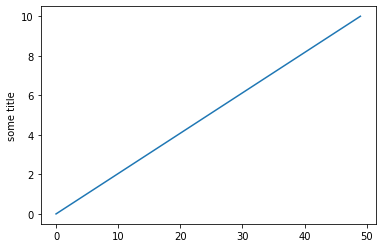
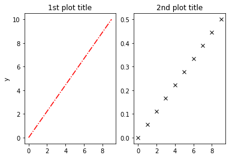
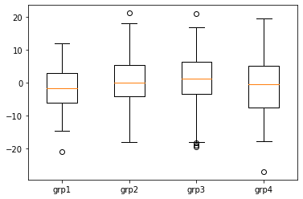
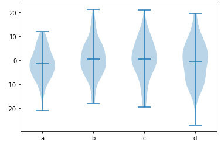
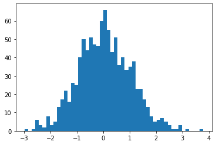

4. Plotting¶
import numpy as np
data_line1 = np.linspace(0, 10, 10)
data_line2 = np.linspace(0, 0.5, 10)
data_groups = [np.random.normal(0, std, 100) for std in range(6, 10)]
data_normal = np.random.randn(1000)
4.1. Matplotlib¶
import matplotlib.pyplot as plt
plt.plot(data_line1)
plt.ylabel("some title")
plt.show()

4.1.1. Linetypes and colours¶
Add other data and change colour and line types.
plt.plot(data_line1, data_line2, 'ro')
plt.plot(data_line1-1, data_line2, '-og')
[<matplotlib.lines.Line2D at 0x7fbb4bde29d0>]
Full list of line types at https://matplotlib.org/2.0.2/api/pyplot_api.html#matplotlib.pyplot.plot
4.1.2. Subplots¶
subplot() takes nrows, ncols, index of the subplots.
1 figure with 1 row and 2 columns would be (1,2,1) and (1,2,2)
plt.subplot(1,2,1)
plt.plot(data_line1, 'r-.')
plt.ylabel("y")
plt.title("1st plot title")
plt.subplot(1,2,2)
plt.plot(data_line2, 'kx')
plt.title("2nd plot title")
plt.show()

4.1.3. Scatter¶
plt.scatter(data_line1, data_line2)
<matplotlib.collections.PathCollection at 0x7fbb4ca47e20>
4.1.4. Boxplot¶
plt.boxplot(data_groups)
plt.xticks([1,2,3, 4], ["grp1", "grp2", "grp3", "grp4"])
plt.show()

4.1.5. Violin plot¶
plt.violinplot(data_groups,
showmeans=True)
plt.xticks([1,2,3,4],["a", "b", "c", "d"])
plt.show()

4.1.6. Histogram¶
num_bins = 50
plt.hist(data_normal, num_bins)
plt.show()

4.2. Seaborn¶
A more modern plotting library built on matplotlib
import seaborn as sns
tips = sns.load_dataset("tips")
dots = sns.load_dataset("dots")
diamonds = sns.load_dataset("diamonds")
sns.relplot(
data = dots,
x = "time",
y = "firing_rate",
col = "align",
hue="coherence",
size="choice",
kind = "line",
palette=sns.color_palette("rocket_r")
)
<seaborn.axisgrid.FacetGrid at 0x7fad97d142e0>
4.2.1. Scatter¶
sns.set_theme(style="whitegrid", context='paper')
sns.scatterplot(data = diamonds,
x="carat", y="price",
hue="clarity", size="depth"
)
<AxesSubplot:xlabel='carat', ylabel='price'>